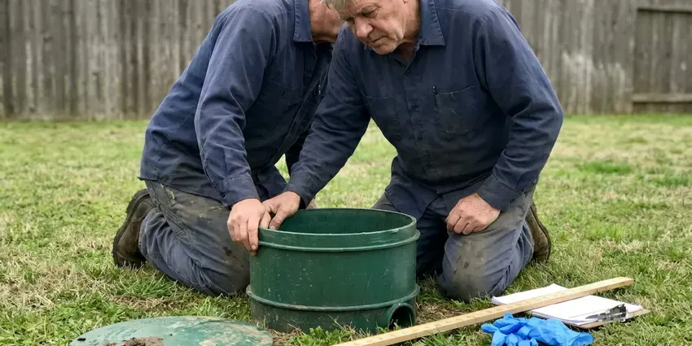

Trenchless Sewer Line Repair in Covington, KY
Keep your pavers, landscaping and concrete intact. Our crew in Covington, KY fixes cracked and root-filled sewer lines from small access points.
- Minimal Digging Required
- No Major Excavation
- Durable Solutions
- Cured-In-Place Pipe Lining

Need Trenchless Sewer Line Repair in Covington, KY?
Contact us now to schedule an inspection and receive a detailed estimate for your sewer repair needs.
Reliable Trenchless Sewer Line Repair in Covington, KY
BFK Plumbing provides modern trenchless sewer line repair services across Covington, KY. This approach allows us to fix damaged sewer pipes with minimal digging, preserving your landscape and reducing repair time.
Our expertise includes:
- Epoxy cured-in-place lining and sectional point repair liners
- Performing cured-in-place pipe relining for damaged stretches.
- Executing pipe bursting for full sewer line replacement.

Additional Plumbing Repair Services in Covington, KY
We offer expert plumbing repair services across Covington, KY to fix leaks, restore flow, and keep your system running smoothly.




Professional septic tank repair, Covington

Customers
Why Choose BFK Plumbing for Trenchless Sewer Line Repair in Covington, KY?
Our expertise in trenchless technology provides a superior alternative for residents in Covington, offering a cleaner, quicker and often more cost-effective way to restore your sewer system.
- Long-Life Materials, Liners and HDPE pipe resist roots and corrosion for decades.
- Less Restoration, Small access points mean less concrete cutting and landscape repair.
- Long-Lasting, The new pipes or liners are highly durable, often outlasting original sewer pipes.
Citywide Coverage
BFK Plumbing is proud to serve every neighborhood in Covington, so no matter where you are, expert trenchless sewer line repair is just a call away. We understand the soil conditions and plumbing challenges found across Covington.
Experienced Team
Our plumbers are highly trained and experienced in the latest trenchless repair techniques, including pipe bursting and CIPP lining. They have the specialized skills required to accurately diagnose and fix your sewer line issues with precision.
Safety-First Approach
Any digging starts with an 811 call so buried utilities are marked before we break ground. Access pits are shored and barricaded while in use.
Trusted Certified Covington Plumbing Services Professionals
At BFK Plumbing, we take pride in providing certified plumbing services throughout Covington, KY. Backed by recognized industry credentials, our experienced plumbers combine technical skill with genuine customer care. Whether it is repair, installation, or maintenance, we follow strict safety and quality standards to deliver lasting results you can trust.
Call Us Now PHCC Plumbing Contractor Recognition
PHCC Plumbing Contractor Recognition Better Business Bureau (BBB) Accreditation
Better Business Bureau (BBB) Accreditation Angi Certified Pro
Angi Certified Pro ISO 9001 Quality Management Certification
ISO 9001 Quality Management CertificationDependable Trenchless Sewer Line Repair Services in Covington, KY
Trenchless vs Traditional Sewer Repair Costs in Covington, KY
While the upfront cost of trenchless sewer repair in Covington, KY can sometimes be comparable to or slightly higher than traditional methods, the overall savings are often substantial. This is because trenchless repairs eliminate the need for extensive excavation, backfilling and landscape restoration. Homeowners save money on repairing driveways, patios and gardens, making it a more sensible choice in the long run for many.

Commercial Trenchless Sewer Line Repair in Covington, KY
For businesses in Covington, KY, minimizing disruption is key. Our commercial trenchless sewer line repair services offer a discreet and efficient way to address sewer issues without impacting business operations or customer access. Whether it is a restaurant, office building or retail space, we provide durable trenchless solutions that restore sewer function quickly, so your business can keep operating smoothly.
Orangeburg and Clay Pipe Repair in Covington
Some older homes still have Orangeburg fiber pipe or vitrified clay sewer laterals. Orangeburg flattens and blisters over time, while clay cracks and separates at joints. Pipe bursting is often the best option for Orangeburg, and lining can work well for clay that still holds its shape. We determine the material on camera before recommending a method.
Trenchless vs Traditional Sewer Repair Cost in Covington, KY
Point repairs often cost $1,500 to $3,500, while full lining of a residential lateral commonly runs $4,000 to $12,000 depending on length and diameter. Pipe bursting typically ranges from $5,000 to $15,000. Traditional excavation can be cheaper upfront on short, shallow runs, but restoring concrete and landscaping can quickly close the gap. We price both options so you can decide.
Cast Iron Sewer Line Repair in Covington, KY
Cast iron drains and sewer lines corrode from the inside, leaving rough scale, cracks and channel rot along the bottom of the pipe. We descale the pipe with chain knockers or cutters, then line it to restore a smooth, sealed interior. This is particularly useful for cast iron running under slabs where excavation is costly. Lining can add many years of service.
Causes of Sewer Line Damage in Covington, KY
Sewer lines in Covington, KY can suffer damage from several factors, including shifting soils that cause pipes to crack or misalign. Much of Kentucky has karst terrain with limestone bedrock and sinkholes, which can slow down sewer line and drainage work. Tree root intrusion is another major culprit, as roots seek out moisture in pipes and grow, causing blockages and structural damage. Age and corrosion, especially in older cast iron or clay pipes, also add to deterioration. Our trenchless solutions address these common issues effectively.
Sectional Point Repair in Covington
When only one section of a line is damaged, a point repair can fix it without lining the whole length. We position a short resin liner at the damaged spot using the camera and inflate it until it cures. Point repairs are a cost-effective fix for a single crack, hole or root entry. They are a good fit on otherwise healthy lines.

Sewer Camera Inspections for Trenchless Repair in Covington
Before any trenchless repair, a detailed sewer camera inspection is crucial. Our high-definition cameras travel through your sewer lines, providing real-time video of the pipe's interior. This allows us to accurately diagnose the problem, identify its exact location and determine the most appropriate trenchless method, whether it is pipe bursting or CIPP. This diagnostic step makes for a precise and lasting repair in Covington.
Trenchless Sewer Line Repair Near Me in Covington, KY
Our team understands the plumbing infrastructure and environmental factors in Covington, allowing us to deliver well-matched trenchless sewer repair solutions right in your neighborhood. Trust the local professionals who know your area best for dependable service.
Much of Kentucky has karst terrain with limestone bedrock and sinkholes, which can slow down sewer line and drainage work. Hard or rocky ground makes digging slow and costly, which makes trenchless methods especially valuable for homeowners. Our crews know how to work with local conditions to keep projects on track.
BFK Plumbing at a Glance
- Licensed and insured plumbers serving Covington, KY
- Same-day appointments and 24/7 emergency response
- Clear written estimates, no hidden fees
- 4.8-star rated by 309+ Kentucky customers
Covington Map
Covington Information
- Population
- 40,972
- Area codes
- Local
- Service area
- Covington and communities within 40 miles
- Nearby
- Independence, Florence, Georgetown, Frankfort
Much of Kentucky has karst terrain with limestone bedrock and sinkholes, which can complicate sewer line and drainage work. With aging sewer lines in many Covington, KY neighborhoods, trenchless sewer line repair offers a lasting solution that limits landscape disruption and handles ground movement well.
Expert Services
Trust our professionals for reliable BFK Plumbing solutions in Covington, KY.
Our Specialized Plumbing Services in Covington, KY
At BFK Plumbing, we provide a complete range of plumbing services across Covington, KY. From leak detection to full system installations, our team ensures fast, precise, and affordable service for both residential and commercial properties. Explore our core services below:


How Our Trenchless Sewer Line Repair Process Works in Covington, KY
Here is a quick breakdown of how BFK Plumbing handles trenchless sewer line repairs in Covington, KY.
Request a Quote
Call (502) 300-9896 or fill out our online form to schedule a diagnostic appointment. We will discuss your sewer line issues and arrange for an inspection visit.
Video Inspection
Our technicians will perform a comprehensive video inspection of your sewer line to pinpoint the problem and determine the best trenchless repair method.
Site Preparation
We create one or two small access points, usually at the beginning and end of the damaged pipe section, minimizing excavation.
Frequently Asked Questions About Trenchless Sewer Line Repair in Covington
The cost for trenchless sewer line repair in Covington, KY can range from $80 to $250 per foot, depending on the method, pipe diameter and scope of the job. For a typical 50-foot residential line, you might expect to pay between $4,000 and $12,500. This estimate generally includes labor, materials and equipment.
Most trenchless sewer line repairs can be completed in one to three days, much faster than traditional excavation methods, which can take a week or more. The exact timeline depends on the length of the pipe, the severity of the damage and the particular trenchless technique used.
BFK Plumbing offers comprehensive warranties on our trenchless sewer line repairs, typically covering materials and workmanship for 10 to 20 years, depending on the product and method. We use proven materials from brands like Perma-Liner and NuFlow, which often come with their own manufacturer guarantees.
A rented snake may temporarily clear a clog, but it will not fix cracks, offsets or roots. Repeated DIY clearing can also damage fragile pipe, so a camera inspection is the smarter first step.
The primary advantages include minimal disruption to your property, saving your lawn, landscaping and hardscapes. It also often results in faster completion times and can be more cost-effective overall by avoiding costly restoration work after the repair.
Yes. Our trenchless repairs come with a written warranty on workmanship, and liner materials carry manufacturer coverage. We explain the terms before you commit.
Quality cured-in-place liners and HDPE pipe are designed to last for decades. Many manufacturers rate them for a 50-year design life when properly installed.
We partner with industry-leading brands known for their quality and durability, such as Perma-Liner and MaxLiner. These manufacturers provide materials and systems that deliver a robust and long-lasting repair for your sewer lines.
What People Are Saying About Our Plumbing Experts?

Mark T.
When our office needed drain cleaning, BFK Plumbing provided quick, reliable service. The plumber arrived on time and made sure every drain flowed perfectly before leaving. Very satisfied.
Drain Cleaning · Nicholasville, KY
Robert G.
The trenchless sewer replacement saved our front yard. They walked us through the camera inspection footage first so we knew exactly what we were paying for.
Sewer Line Replacement · Frankfort, KY
Sofia M.
Two new toilets installed in one visit, no mess left behind, and the tech even adjusted a faucet he noticed was dripping. Fair pricing and really friendly.
Toilet Installation · Covington, KY
Daniel K.
A pipe burst at 11 pm and they actually answered. The plumber showed up within the hour, shut everything down, and had us back to normal the next morning. Could not ask for more.
Emergency Plumbing · Frankfort, KY
Patricia H.
We had a slab leak that two other companies could not find. BFK Plumbing located it in under an hour, explained our options, and the price matched the quote to the dollar.
Slab Leak Repair · Frankfort, KYLaura S.
I scheduled a water heater replacement, and the team made the process smooth and affordable. The new unit works perfectly, and they cleaned up after completing the job.
Water Heater Replacement · Independence, KY